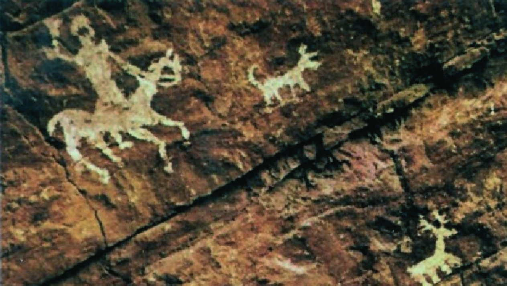

Ilirët janë popujt më të vjetër në Ballkan. Territori ku ata jetonin quhej Iliri. Një ndër krahinat më të njohura ilire ishte Dardania - është Kosova e sotme. Ajo banohej nga fisi ilir i dardanëve. Prejardhja e emrit dardan vjen nga fjala shqipe dardhë, që do të thotë vendi i dardhave. Ky vend, ku bën pjesë edhe territori i sotëm i Kosovës, filloi të popullohej shumë herët në histori. Pozita gjeografike dhe pasuritë e bollshme natyrore ishin të përshtatshme për zhvillimin e vendbanimeve në Kosovë. Kjo dëshmohet nga shumë zbulime arkeologjike të gjetura në gjithë territorin e saj. Dëshmitë më të hershme arkeologjike të vendbanimeve që janë gjetur në Kosovë, i përkasin epokës së gurit të ri (neolitit), rreth 6200 vjet para erës sonë. Kosova ka qenë e banuar dhe gjurmët e veprimtarive të njeriut, nga periudhat më të lashta deri vonë, janë të dukshme në territorin e saj.
